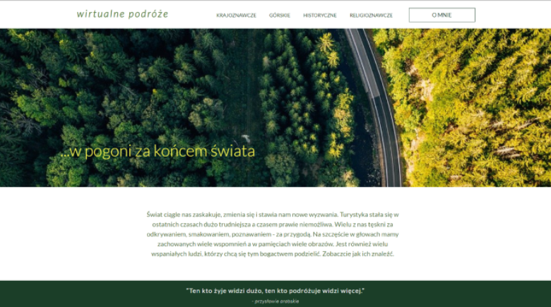

moje projekty

wirtualne podróże
landing page promujący slajdowiska, spotkania, wydarzenia kulturalne, poświęcone eskapadom krajoznawczym, wyprawom górskim, podróżom historycznym i turystycze religioznawczej.
* użyte technologie: html5,css3
salon fryzjerski
wizytówka firmowa potencjalnego salonu fryzjerskiego, świadczącego usługi zgodne z najnowszymi trendami mody zarówno kobietom, mężczyznom jak i dzieciom.
* użyte technologie: html5, css3

grupa poszukiwawcza
strona Grupy Poszukiwawczo-Ratowniczej Ochotniczej Straży Pożarnej w Goszczy, która prowadzi poszukiwania osób zaginionych z wykorzystaniem psów ratowniczych.
* użyte technologie: html5, sass, js, react